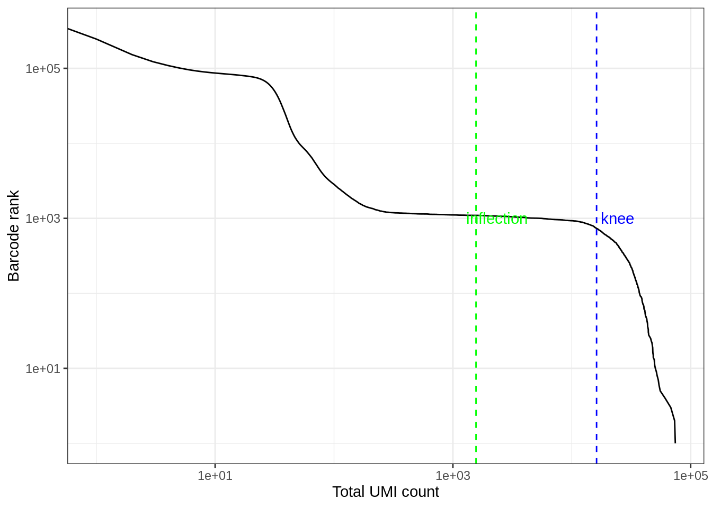

Processing kallisto bus Output (10x v2 chemistry)
Lambda Moses
2019-06-22
Last updated: 2019-06-22
Checks: 7 0
Knit directory: BUS_notebooks_R/
This reproducible R Markdown analysis was created with workflowr (version 1.4.0). The Checks tab describes the reproducibility checks that were applied when the results were created. The Past versions tab lists the development history.
Great! Since the R Markdown file has been committed to the Git repository, you know the exact version of the code that produced these results.
Great job! The global environment was empty. Objects defined in the global environment can affect the analysis in your R Markdown file in unknown ways. For reproduciblity it’s best to always run the code in an empty environment.
The command set.seed(20181214) was run prior to running the code in the R Markdown file. Setting a seed ensures that any results that rely on randomness, e.g. subsampling or permutations, are reproducible.
Great job! Recording the operating system, R version, and package versions is critical for reproducibility.
Nice! There were no cached chunks for this analysis, so you can be confident that you successfully produced the results during this run.
Great job! Using relative paths to the files within your workflowr project makes it easier to run your code on other machines.
Great! You are using Git for version control. Tracking code development and connecting the code version to the results is critical for reproducibility. The version displayed above was the version of the Git repository at the time these results were generated.
Note that you need to be careful to ensure that all relevant files for the analysis have been committed to Git prior to generating the results (you can use wflow_publish or wflow_git_commit). workflowr only checks the R Markdown file, but you know if there are other scripts or data files that it depends on. Below is the status of the Git repository when the results were generated:
Ignored files:
Ignored: .Rhistory
Ignored: .Rproj.user/
Ignored: BUS_notebooks_R.Rproj
Ignored: data/fastqs/
Ignored: data/hgmm_1k_fastqs.tar
Ignored: data/hs_cdna.fa.gz
Ignored: data/mm_cdna.fa.gz
Ignored: data/neuron_10k_fastqs.tar
Ignored: data/whitelist_v2.txt
Ignored: output/hs_mm_tr_index.idx
Ignored: output/hs_tr_index.idx
Ignored: output/mm_tr_index.idx
Ignored: tmp/
Untracked files:
Untracked: output/tr2g_hgmm.tsv
Unstaged changes:
Modified: README.md
Modified: analysis/10xv3.Rmd
Note that any generated files, e.g. HTML, png, CSS, etc., are not included in this status report because it is ok for generated content to have uncommitted changes.
These are the previous versions of the R Markdown and HTML files. If you’ve configured a remote Git repository (see ?wflow_git_remote), click on the hyperlinks in the table below to view them.
| File | Version | Author | Date | Message |
|---|---|---|---|---|
| html | 9fa20ae | Lambda Moses | 2019-06-22 | Build site. |
| Rmd | dba27cc | Lambda Moses | 2019-06-22 | Adapted notebook to new version of bustools |
| Rmd | 06e9869 | Lambda Moses | 2019-03-01 | Adapted old notebooks to new version of BUSpaRse |
| html | 06e9869 | Lambda Moses | 2019-03-01 | Adapted old notebooks to new version of BUSpaRse |
| html | c465ce1 | Lambda Moses | 2019-02-14 | Build site |
| Rmd | f22beac | Lambda Moses | 2019-02-14 | Added CellRanger whiltelist clarification |
| Rmd | 000215e | Lambda Moses | 2019-02-14 | Clarified git cloning this repo and resolved swapped code chunks for output.sorted.bus |
| html | 71513e5 | Lambda Moses | 2019-02-14 | Good site with figures and reproducibility metrics |
| Rmd | 95f2951 | Lambda Moses | 2019-02-14 | Added head of bus file |
| html | 7184968 | Lambda Moses | 2019-02-14 | Build site. |
| Rmd | 8cd81e0 | Lambda Moses | 2019-02-14 | Finally saved the figures |
| html | 8cd81e0 | Lambda Moses | 2019-02-14 | Finally saved the figures |
| html | 45c5d4a | Lambda Moses | 2019-02-14 | Build site. |
| Rmd | 92aa915 | Lambda Moses | 2019-02-14 | Named chunks with images |
| html | 87d15f5 | Lambda Moses | 2019-02-14 | Build site. |
| Rmd | 8d9fe9a | Lambda Moses | 2019-02-14 | More detailed explanations for kallisto bus workshop |
| html | b7b21a0 | Lambda Moses | 2019-02-02 | Build site. |
| Rmd | c7ecb56 | Lambda Moses | 2019-02-02 | Added BUSpaRse installation link and note |
| html | a0becdf | Lambda Moses | 2018-12-19 | Build site. |
| html | 93c1053 | Lambda Moses | 2018-12-19 | Build site. |
| Rmd | 9731fd6 | Lambda Moses | 2018-12-19 | Corrected typo |
| html | 85a5770 | Lambda Moses | 2018-12-14 | Build site. |
| Rmd | ca1d6ce | Lambda Moses | 2018-12-14 | Clean up |
| html | 6276894 | Lambda Moses | 2018-12-14 | Build site. |
| html | db70187 | Lambda Moses | 2018-12-14 | Build site. |
| Rmd | b67fc92 | Lambda Moses | 2018-12-14 | Added 10xv3 notebook and further elaboration to 10xv2 notebook |
| html | fff442d | Lambda Moses | 2018-12-14 | Build site. |
| Rmd | 695e202 | Lambda Moses | 2018-12-14 | Changed name to BUSpaRse |
| html | 09a56c1 | Lambda Moses | 2018-12-14 | Build site. |
| Rmd | d288e19 | Lambda Moses | 2018-12-14 | Cache rather than skip evaluation |
| html | 30c9aa3 | Lambda Moses | 2018-12-14 | Build site. |
| Rmd | fd3d5ae | Lambda Moses | 2018-12-14 | Don’t collapse output |
| html | 2da3b35 | Lambda Moses | 2018-12-14 | Build site. |
| Rmd | 1fc3e91 | Lambda Moses | 2018-12-14 | Publish 10xv2 notebook |
| Rmd | 074d55f | Lambda Moses | 2018-12-14 | Initial commit, already with 10xv2 notebook |
In this vignette, we process fastq data from scRNA-seq (10x v2 chemistry) with to make a sparse matrix that can be used in downstream analysis with command line tools kallisto and bustools, as described in the kallisto bus paper. Then we will start a standard downstream analysis with Seurat.
Setup
If you would like to rerun this notebook, you can git clone this repository or directly download this notebook from GitHub.
Install packages
The primary analysis section of this notebook demonstrates the use of command line tools kallisto and bustools. Please use kallisto >= 0.45, whose binary can be downloaded here. The binary of bustools can be found here.
After you download the binary, you should decompress the file (if it is tar.gz) with tar -xzvf file.tar.gz in the bash terminal, and add the directory containing the binary to PATH by export PATH=$PATH:/foo/bar, where /foo/bar here is the directory of interest. Then you can directly invoke the binary on the command line as we will do in this notebook.
We will be using the R packages below. BUSpaRse is not yet on CRAN or Bioconductor. For Mac users, see the installation note for BUSpaRse. BUSpaRse will be used to generate the transcript to gene file for bustools and to read output of bustools into R. We will also use Seurat version 3 which is now on CRAN.
# Install devtools if it's not already installed
if (!require(devtools)) {
install.packages("devtools")
}
# Install from GitHub
devtools::install_github("BUStools/BUSpaRse")The package DropletUtils will be used to estimate the number of real cells as opposed to empty droplets. It’s on Bioconductor, and here is how it should be installed:
if (!require(BiocManager)) {
install.packages("BiocManager")
}
BiocManager::install("DropletUtils")The other R packages below are on CRAN, and can be installed with install.packages.
library(BUSpaRse)
library(Seurat)
library(tidyverse)
library(DropletUtils)
library(Matrix)
theme_set(theme_bw())Download data
The data set we are using here is 1k 1:1 Mixture of Fresh Frozen Human (HEK293T) and Mouse (NIH3T3) Cells from the 10x website. First, we download the fastq files (6.34 GB).
if (!file.exists("./data/hgmm_1k_fastqs.tar")) {
download.file("http://cf.10xgenomics.com/samples/cell-exp/2.1.0/hgmm_1k/hgmm_1k_fastqs.tar", destfile = "./data/hgmm_1k_fastqs.tar", quiet = TRUE)
}Then untar this file
cd ./data
tar -xvf ./hgmm_1k_fastqs.tar#> fastqs/
#> fastqs/hgmm_1k_S1_L001_I1_001.fastq.gz
#> fastqs/hgmm_1k_S1_L001_R1_001.fastq.gz
#> fastqs/hgmm_1k_S1_L001_R2_001.fastq.gz
#> fastqs/hgmm_1k_S1_L002_I1_001.fastq.gz
#> fastqs/hgmm_1k_S1_L002_R1_001.fastq.gz
#> fastqs/hgmm_1k_S1_L002_R2_001.fastq.gz
#> fastqs/hgmm_1k_S1_L003_I1_001.fastq.gz
#> fastqs/hgmm_1k_S1_L003_R1_001.fastq.gz
#> fastqs/hgmm_1k_S1_L003_R2_001.fastq.gz
#> fastqs/hgmm_1k_S1_L004_I1_001.fastq.gz
#> fastqs/hgmm_1k_S1_L004_R1_001.fastq.gz
#> fastqs/hgmm_1k_S1_L004_R2_001.fastq.gz
#> fastqs/hgmm_1k_S1_L005_I1_001.fastq.gz
#> fastqs/hgmm_1k_S1_L005_R1_001.fastq.gz
#> fastqs/hgmm_1k_S1_L005_R2_001.fastq.gz
#> fastqs/hgmm_1k_S1_L006_I1_001.fastq.gz
#> fastqs/hgmm_1k_S1_L006_R1_001.fastq.gz
#> fastqs/hgmm_1k_S1_L006_R2_001.fastq.gz
#> fastqs/hgmm_1k_S1_L007_I1_001.fastq.gz
#> fastqs/hgmm_1k_S1_L007_R1_001.fastq.gz
#> fastqs/hgmm_1k_S1_L007_R2_001.fastq.gz
#> fastqs/hgmm_1k_S1_L008_I1_001.fastq.gz
#> fastqs/hgmm_1k_S1_L008_R1_001.fastq.gz
#> fastqs/hgmm_1k_S1_L008_R2_001.fastq.gzGenerate the gene count matrix
Build the kallisto index
Here we use kallisto to pseudoalign the reads to the transcriptome and then to create the bus file to be converted to a sparse matrix. The first step is to build an index of the transcriptome. This data set has both human and mouse cells, so we need both human and mouse transcriptomes. The transcriptomes downloaded here are from Ensembl version 94, released in October 2018.
# Human transcriptome
if (!file.exists("./data/hs_cdna.fa.gz")) {
download.file("ftp://ftp.ensembl.org/pub/release-94/fasta/homo_sapiens/cdna/Homo_sapiens.GRCh38.cdna.all.fa.gz", "./data/hs_cdna.fa.gz", method = "wget", quiet = TRUE)
}
# Mouse transcriptome
if (!file.exists("./data/mm_cdna.fa.gz")) {
download.file("ftp://ftp.ensembl.org/pub/release-94/fasta/mus_musculus/cdna/Mus_musculus.GRCm38.cdna.all.fa.gz", "./data/mm_cdna.fa.gz", method = "wget", quiet = TRUE)
}# This chunk is in bash
kallisto version#> kallisto, version 0.46.0Actually, we don’t need to unzip the fasta files
if (!file.exists("./output/hs_mm_tr_index.idx")) {
system("kallisto index -i ./output/hs_mm_tr_index.idx ./data/hs_cdna.fa.gz ./data/mm_cdna.fa.gz")
}Run kallisto bus
Here we will generate the bus file. Here bus stands for Barbode, UMI, Set (i.e. equivalent class). In text form, it is a table whose first column is the barcode. The second column is the UMI that are associated with the barcode. The third column is the index of the equivalence class reads with the UMI maps to (equivalence class will be explained later). The fourth column is count of reads with this barcode, UMI, and equivalence class combination, which is ignored as one UMI should stand for one molecule. See this paper for more detail.
These are the technologies supported by kallisto bus:
system("kallisto bus --list", intern = TRUE)#> Warning in system("kallisto bus --list", intern = TRUE): running command
#> 'kallisto bus --list' had status 1#> [1] "List of supported single-cell technologies"
#> [2] ""
#> [3] "short name description"
#> [4] "---------- -----------"
#> [5] "10xv1 10x version 1 chemistry"
#> [6] "10xv2 10x version 2 chemistry"
#> [7] "10xv3 10x version 3 chemistry"
#> [8] "CELSeq CEL-Seq"
#> [9] "CELSeq2 CEL-Seq version 2"
#> [10] "DropSeq DropSeq"
#> [11] "inDrops inDrops"
#> [12] "SCRBSeq SCRB-Seq"
#> [13] "SureCell SureCell for ddSEQ"
#> [14] ""
#> attr(,"status")
#> [1] 1Here we have 8 samples. Each sample has 3 files: I1 means sample index, R1 means barcode and UMI, and R2 means the piece of cDNA. The -i argument specifies the index file we just built. The -o argument specifies the output directory. The -x argument specifies the sequencing technology used to generate this data set. The -t argument specifies the number of threads used. I ran this on a server and used 8 threads.
# This chunk is in bash
cd ./data
kallisto bus -i ../output/hs_mm_tr_index.idx -o ../output/out_hgmm1k -x 10xv2 -t8 \
./fastqs/hgmm_1k_S1_L001_R1_001.fastq.gz ./fastqs/hgmm_1k_S1_L001_R2_001.fastq.gz \
./fastqs/hgmm_1k_S1_L002_R1_001.fastq.gz ./fastqs/hgmm_1k_S1_L002_R2_001.fastq.gz \
./fastqs/hgmm_1k_S1_L003_R1_001.fastq.gz ./fastqs/hgmm_1k_S1_L003_R2_001.fastq.gz \
./fastqs/hgmm_1k_S1_L004_R1_001.fastq.gz ./fastqs/hgmm_1k_S1_L004_R2_001.fastq.gz \
./fastqs/hgmm_1k_S1_L005_R1_001.fastq.gz ./fastqs/hgmm_1k_S1_L005_R2_001.fastq.gz \
./fastqs/hgmm_1k_S1_L006_R1_001.fastq.gz ./fastqs/hgmm_1k_S1_L006_R2_001.fastq.gz \
./fastqs/hgmm_1k_S1_L007_R1_001.fastq.gz ./fastqs/hgmm_1k_S1_L007_R2_001.fastq.gz \
./fastqs/hgmm_1k_S1_L008_R1_001.fastq.gz ./fastqs/hgmm_1k_S1_L008_R2_001.fastq.gz#>
#> [index] k-mer length: 31
#> [index] number of targets: 302,896
#> [index] number of k-mers: 206,125,466
#> [index] number of equivalence classes: 1,252,306
#> [quant] will process sample 1: ./fastqs/hgmm_1k_S1_L001_R1_001.fastq.gz
#> ./fastqs/hgmm_1k_S1_L001_R2_001.fastq.gz
#> [quant] will process sample 2: ./fastqs/hgmm_1k_S1_L002_R1_001.fastq.gz
#> ./fastqs/hgmm_1k_S1_L002_R2_001.fastq.gz
#> [quant] will process sample 3: ./fastqs/hgmm_1k_S1_L003_R1_001.fastq.gz
#> ./fastqs/hgmm_1k_S1_L003_R2_001.fastq.gz
#> [quant] will process sample 4: ./fastqs/hgmm_1k_S1_L004_R1_001.fastq.gz
#> ./fastqs/hgmm_1k_S1_L004_R2_001.fastq.gz
#> [quant] will process sample 5: ./fastqs/hgmm_1k_S1_L005_R1_001.fastq.gz
#> ./fastqs/hgmm_1k_S1_L005_R2_001.fastq.gz
#> [quant] will process sample 6: ./fastqs/hgmm_1k_S1_L006_R1_001.fastq.gz
#> ./fastqs/hgmm_1k_S1_L006_R2_001.fastq.gz
#> [quant] will process sample 7: ./fastqs/hgmm_1k_S1_L007_R1_001.fastq.gz
#> ./fastqs/hgmm_1k_S1_L007_R2_001.fastq.gz
#> [quant] will process sample 8: ./fastqs/hgmm_1k_S1_L008_R1_001.fastq.gz
#> ./fastqs/hgmm_1k_S1_L008_R2_001.fastq.gz
#> [quant] finding pseudoalignments for the reads ... done
#> [quant] processed 63,252,296 reads, 52,229,344 reads pseudoalignedSee what the outputs are
list.files("./output/out_hgmm1k/")#> [1] "matrix.ec" "output.bus" "run_info.json" "transcripts.txt"Run BUStools
Map transcripts to genes
For the sparse matrix, most people are interested in how many UMIs per gene per cell, we here we will quantify this from the bus output, and to do so, we need to find which gene corresponds to each transcript. Remember in the output of kallisto bus, there’s the file transcripts.txt. Those are the transcripts in the transcriptome index.
Remember that we downloaded transcriptome FASTA files from Ensembl just now. In FASTA files, each entry is a sequence with a name. In Ensembl FASTA files, the sequence name has genome annotation of the corresponding sequence, so we can extract transcript IDs and corresponding gene IDs and gene names from there.
tr2g <- transcript2gene(fasta_file = c("./data/hs_cdna.fa.gz", "./data/mm_cdna.fa.gz"),
kallisto_out_path = "./output/out_hgmm1k")#> Reading FASTA file.
#> Reading FASTA file.#> Sorting transcriptshead(tr2g)#> transcript gene gene_name
#> 1: ENST00000632684.1 ENSG00000282431.1 TRBD1
#> 2: ENST00000434970.2 ENSG00000237235.2 TRDD2
#> 3: ENST00000448914.1 ENSG00000228985.1 TRDD3
#> 4: ENST00000415118.1 ENSG00000223997.1 TRDD1
#> 5: ENST00000631435.1 ENSG00000282253.1 TRBD1
#> 6: ENST00000390583.1 ENSG00000211923.1 IGHD3-10bustools requires tr2g to be written into a tab delimited file of a specific format: No headers, first column is transcript ID, and second column is the corresponding gene ID. Transcript IDs must be in the same order as in the kallisto index.
# Write tr2g to format required by bustools
save_tr2g_bustools(tr2g, "./output/tr2g_hgmm.tsv")A whitelist that contains all the barcodes known to be present in the kit is provided by 10x and comes with CellRanger. A CellRanger installation is required, though we will not run CellRanger here.
# Copy v2 chemistry whitelist to working directory
cp ~/cellranger-3.0.2/cellranger-cs/3.0.2/lib/python/cellranger/barcodes/737K-august-2016.txt \
./data/whitelist_v2.txtThen we’re ready to make the gene count matrix. First, bustools runs barcode error correction on the bus file. Then, the corrected bus file is sorted by barcode, UMI, and equivalence classes. Then the UMIs are counted and the counts are collapsed into gene level. Here the | is pipe in bash, just like the magrittr pipe %>% in R, that pipes the output of one command to the next.
mkdir ./output/out_hgmm1k/genecount ./tmp
bustools correct -w ./data/whitelist_v2.txt -p ./output/out_hgmm1k/output.bus | \
bustools sort -T tmp/ -t 4 -p - | \
bustools count -o ./output/out_hgmm1k/genecount/genes -g ./output/tr2g_hgmm.tsv \
-e ./output/out_hgmm1k/matrix.ec -t ./output/out_hgmm1k/transcripts.txt --genecounts -#> mkdir: cannot create directory ‘./tmp’: File exists
#> Found 737280 barcodes in the whitelist
#> Number of hamming dist 1 barcodes = 20550336
#> Processed 52229344 bus records
#> In whitelist = 50774199
#> Corrected = 348400
#> Uncorrected = 1106745
#> Read in 51122599 number of busrecordsSee what the outputs are
list.files("./output/out_hgmm1k/genecount")#> [1] "genes.barcodes.txt" "genes.genes.txt" "genes.mtx"Here we have text files for barcodes and gene names, and an mtx file for the sparse gene count matrix.
Explore the data
Now we can load the matrix into R for analysis.
res_mat <- read_count_output("./output/out_hgmm1k/genecount",
name = "genes", tcc = FALSE)Remove empty droplets
Cool, so now we have the sparse matrix. What does it look like?
dim(res_mat)#> [1] 76416 362063The number of genes is as expected for two species. There’re way more cells than we expect, which is about 1000. So what’s going on?
How many UMIs per barcode?
tot_counts <- Matrix::colSums(res_mat)
summary(tot_counts)#> Min. 1st Qu. Median Mean 3rd Qu. Max.
#> 0.00 1.00 1.00 76.26 8.00 74534.00The vast majority of “cells” have only a few UMI detected. Those are empty droplets. 10x claims to have cell capture rate of up to 65%, but in practice, depending on how many cells are in fact loaded, the rate can be much lower. A commonly used method to estimate the number of empty droplets is barcode ranking knee and inflection points, as those are often assumed to represent transition between two components of a distribution. While more sophisticated method exist (e.g. see emptyDrops in DropletUtils), for simplicity, we will use the barcode ranking method here. However, whichever way we go, we don’t have the ground truth.
# Compute barcode rank
bc_rank <- barcodeRanks(res_mat)qplot(bc_rank$rank, bc_rank$total, geom = "line") +
geom_hline(yintercept = metadata(bc_rank)$knee, color = "blue", linetype = 2) +
geom_hline(yintercept = metadata(bc_rank)$inflection, color = "green", linetype = 2) +
annotate("text", x = 1000, y = 1.5 * c(metadata(bc_rank)$knee, metadata(bc_rank)$inflection),
label = c("knee", "inflection"), color = c("blue", "green")) +
scale_x_log10() +
scale_y_log10() +
labs(x = "Rank", y = "Total reads")#> Warning: Transformation introduced infinite values in continuous y-axis
The inflection point looks like a reasonable number of cells.
# Filter the matrix
res_mat <- res_mat[, tot_counts > metadata(bc_rank)$inflection]
dim(res_mat)#> [1] 76416 1094Cell species
How many cells are from humans and how many from mice? The number of cells with mixed species indicates doublet rate.
gene_species <- ifelse(str_detect(rownames(res_mat), "^ENSMUSG"), "mouse", "human")
mouse_inds <- gene_species == "mouse"
human_inds <- gene_species == "human"
# mark cells as mouse or human
cell_species <- tibble(n_mouse_umi = Matrix::colSums(res_mat[mouse_inds,]),
n_human_umi = Matrix::colSums(res_mat[human_inds,]),
tot_umi = Matrix::colSums(res_mat),
prop_mouse = n_mouse_umi / tot_umi,
prop_human = n_human_umi / tot_umi)# Classify species based on proportion of UMI, with cutoff of 90%
cell_species <- cell_species %>%
mutate(species = case_when(
prop_mouse > 0.9 ~ "mouse",
prop_human > 0.9 ~ "human",
TRUE ~ "mixed"
))ggplot(cell_species, aes(n_human_umi, n_mouse_umi, color = species)) +
geom_point(size = 0.5)
Great, looks like the vast majority of cells are not mixed.
cell_species %>%
dplyr::count(species) %>%
mutate(proportion = n / ncol(res_mat))#> # A tibble: 3 x 3
#> species n proportion
#> <chr> <int> <dbl>
#> 1 human 566 0.517
#> 2 mixed 3 0.00274
#> 3 mouse 525 0.480Great, only about 0.3% of cells here are doublets, which is lower than the ~1% 10x lists. Doublet rate tends to be lower when cell concentration is lower. However, doublets can still be formed with cells from the same species, so the number of mixed species “cells” is only a lower bound of doublet rate.
Dimension reduction
seu <- CreateSeuratObject(res_mat, min.cells = 3) %>%
NormalizeData(verbose = FALSE) %>%
ScaleData(verbose = FALSE) %>%
FindVariableFeatures(verbose = FALSE)# Add species to meta data
seu <- AddMetaData(seu, metadata = cell_species$species, col.name = "species")See how number of total counts and number of genes expressed are distributed.
VlnPlot(seu, c("nCount_RNA", "nFeature_RNA"), group.by = "species",
pt.size = 0.1)
Another QC plot
ggplot(seu@meta.data, aes(nCount_RNA, nFeature_RNA, color = species)) +
geom_point(alpha = 0.7, size = 0.5) +
labs(x = "Total UMI counts per cell", y = "Number of genes detected")
| Version | Author | Date |
|---|---|---|
| 9fa20ae | Lambda Moses | 2019-06-22 |
The mixed species doublets do look different from human and mouse cells.
seu <- RunPCA(seu, verbose = FALSE, npcs = 30)
ElbowPlot(seu, ndims = 30)
DimPlot(seu, reduction = "pca", pt.size = 0.5, group.by = "species")
The first PC separates species, as expected. Also as expected, the doublets are in between human and mouse cells in this plot.
seu <- RunTSNE(seu, dims = 1:20, check_duplicates = FALSE)
DimPlot(seu, reduction = "tsne", pt.size = 0.5, group.by = "species")
The species separate, and the few doublets form its own cluster, as expected.
sessionInfo()#> R version 3.5.2 (2018-12-20)
#> Platform: x86_64-redhat-linux-gnu (64-bit)
#> Running under: CentOS Linux 7 (Core)
#>
#> Matrix products: default
#> BLAS/LAPACK: /usr/lib64/R/lib/libRblas.so
#>
#> locale:
#> [1] LC_CTYPE=en_US.UTF-8 LC_NUMERIC=C
#> [3] LC_TIME=en_US.UTF-8 LC_COLLATE=en_US.UTF-8
#> [5] LC_MONETARY=en_US.UTF-8 LC_MESSAGES=en_US.UTF-8
#> [7] LC_PAPER=en_US.UTF-8 LC_NAME=C
#> [9] LC_ADDRESS=C LC_TELEPHONE=C
#> [11] LC_MEASUREMENT=en_US.UTF-8 LC_IDENTIFICATION=C
#>
#> attached base packages:
#> [1] parallel stats4 stats graphics grDevices utils datasets
#> [8] methods base
#>
#> other attached packages:
#> [1] Matrix_1.2-15 DropletUtils_1.5.3
#> [3] SingleCellExperiment_1.4.1 SummarizedExperiment_1.12.0
#> [5] DelayedArray_0.8.0 BiocParallel_1.16.6
#> [7] matrixStats_0.54.0 Biobase_2.42.0
#> [9] GenomicRanges_1.34.0 GenomeInfoDb_1.18.2
#> [11] IRanges_2.16.0 S4Vectors_0.20.1
#> [13] BiocGenerics_0.28.0 forcats_0.4.0
#> [15] stringr_1.4.0 dplyr_0.8.1
#> [17] purrr_0.3.2 readr_1.3.1
#> [19] tidyr_0.8.3 tibble_2.1.3
#> [21] ggplot2_3.2.0 tidyverse_1.2.1
#> [23] Seurat_3.0.2 BUSpaRse_0.99.4
#>
#> loaded via a namespace (and not attached):
#> [1] readxl_1.3.1 backports_1.1.4
#> [3] workflowr_1.4.0 plyr_1.8.4
#> [5] igraph_1.2.4.1 lazyeval_0.2.2
#> [7] splines_3.5.2 listenv_0.7.0
#> [9] digest_0.6.19 htmltools_0.3.6
#> [11] fansi_0.4.0 gdata_2.18.0
#> [13] magrittr_1.5 memoise_1.1.0
#> [15] cluster_2.0.7-1 ROCR_1.0-7
#> [17] limma_3.38.3 globals_0.12.4
#> [19] Biostrings_2.50.2 modelr_0.1.4
#> [21] RcppParallel_4.4.3 R.utils_2.9.0
#> [23] prettyunits_1.0.2 colorspace_1.4-1
#> [25] rvest_0.3.4 blob_1.1.1
#> [27] ggrepel_0.8.1 haven_2.1.0
#> [29] xfun_0.7 crayon_1.3.4
#> [31] RCurl_1.95-4.12 jsonlite_1.6
#> [33] zeallot_0.1.0 survival_2.44-1.1
#> [35] zoo_1.8-5 ape_5.3
#> [37] glue_1.3.1 gtable_0.3.0
#> [39] zlibbioc_1.28.0 XVector_0.22.0
#> [41] plyranges_1.2.0 Rhdf5lib_1.4.3
#> [43] future.apply_1.3.0 HDF5Array_1.10.1
#> [45] scales_1.0.0 edgeR_3.24.3
#> [47] DBI_1.0.0 bibtex_0.4.2
#> [49] Rcpp_1.0.1 metap_1.1
#> [51] viridisLite_0.3.0 progress_1.2.2
#> [53] dqrng_0.2.1 reticulate_1.12
#> [55] bit_1.1-14 rsvd_1.0.1
#> [57] SDMTools_1.1-221.1 tsne_0.1-3
#> [59] htmlwidgets_1.3 httr_1.4.0
#> [61] gplots_3.0.1.1 RColorBrewer_1.1-2
#> [63] ica_1.0-2 pkgconfig_2.0.2
#> [65] XML_3.98-1.20 R.methodsS3_1.7.1
#> [67] utf8_1.1.4 locfit_1.5-9.1
#> [69] labeling_0.3 tidyselect_0.2.5
#> [71] rlang_0.3.4 reshape2_1.4.3
#> [73] AnnotationDbi_1.44.0 cellranger_1.1.0
#> [75] munsell_0.5.0 tools_3.5.2
#> [77] cli_1.1.0 generics_0.0.2
#> [79] RSQLite_2.1.1 broom_0.5.2
#> [81] ggridges_0.5.1 evaluate_0.13
#> [83] yaml_2.2.0 npsurv_0.4-0
#> [85] knitr_1.22 bit64_0.9-7
#> [87] fs_1.3.1 fitdistrplus_1.0-14
#> [89] caTools_1.17.1.2 RANN_2.6.1
#> [91] pbapply_1.4-0 future_1.13.0
#> [93] nlme_3.1-137 whisker_0.3-2
#> [95] R.oo_1.22.0 xml2_1.2.0
#> [97] biomaRt_2.38.0 rstudioapi_0.10
#> [99] compiler_3.5.2 plotly_4.9.0
#> [101] png_0.1-7 lsei_1.2-0
#> [103] stringi_1.4.3 lattice_0.20-38
#> [105] vctrs_0.1.0 pillar_1.4.1
#> [107] Rdpack_0.11-0 lmtest_0.9-37
#> [109] data.table_1.12.2 cowplot_0.9.4
#> [111] bitops_1.0-6 irlba_2.3.3
#> [113] gbRd_0.4-11 rtracklayer_1.42.2
#> [115] R6_2.4.0 KernSmooth_2.23-15
#> [117] gridExtra_2.3 codetools_0.2-15
#> [119] MASS_7.3-51.4 gtools_3.8.1
#> [121] assertthat_0.2.1 rhdf5_2.26.2
#> [123] rprojroot_1.3-2 withr_2.1.2
#> [125] GenomicAlignments_1.18.1 sctransform_0.2.0
#> [127] Rsamtools_1.34.1 GenomeInfoDbData_1.2.0
#> [129] hms_0.4.2 grid_3.5.2
#> [131] rmarkdown_1.12 Rtsne_0.15
#> [133] git2r_0.25.2 lubridate_1.7.4